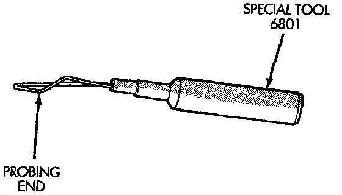

Troubleshooting Tools
TROUBLESHOOTING TOOLSWhen diagnosing a problem in an electrical circuit, there are several common tools necessary. These tools are listed and explained below.
- Jumper Wire - This is a test wire used to connect two points of a circuit. It can be used to bypass an open in a circuit.
WARNING: NEVER USE A JUMPER WIRE ACROSS A LOAD, SUCH AS A MOTOR, CONNECTED BETWEEN A BATTERY FEED AND GROUND.
- Voltmeter - This instrument is used to check for voltage on a circuit. Always connect the black lead to a known good ground and the red lead to the positive side of the circuit.
CAUTION: Most of the electrical components used in today's vehicle are solid state. When checking voltages in these circuits, use a meter with a 10 megohm or greater impedance.
- Ohmmeter - This instrument is used to check the resistance between two points of a circuit. Low or no resistance in a circuit can mean good continuity or a shorted circuit.
CAUTION: Most of the electrical components used in today's vehicle are solid state. When checking resistance in these circuits, use a meter with a 10 megohm or greater impedance. In addition, be sure the power is disconnected from the circuit. Circuits that are powered-up by the vehicle electrical system can cause damage to the equipment and provide false readings.
Probing Tool:

- Probing Tools - These tools are used for probing terminals in connectors. Select the proper size tool from Special Tool Package 6807 and insert it into the terminal being tested. Use the other end of the tool to insert the meter probe.